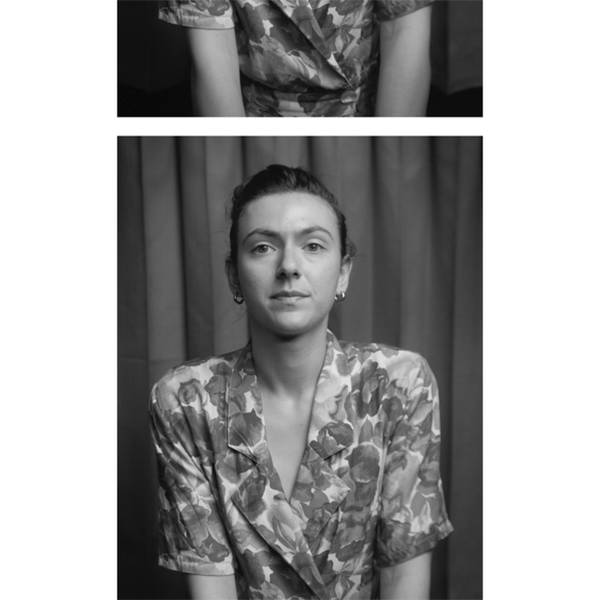

Documentary series
Chroniques de la vie ordinaire
Documentary series, 2022
Primary media

Summary
After a first cycle set in Montreal, Amélie Hardy continues Chroniques de la vie ordinaire across three Paris neighborhoods in a short and intimate format.
I handled the editing, with an emphasis on clarity, continuity across episodes, and the preservation of each encounter’s sensitivity.